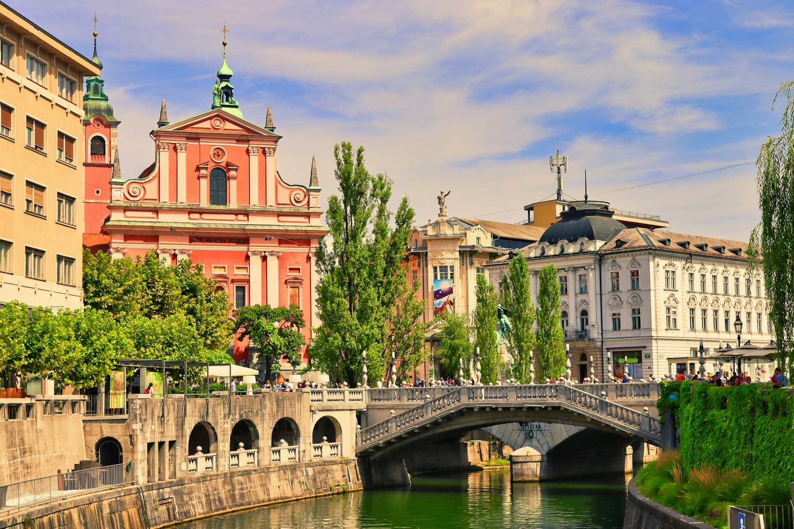
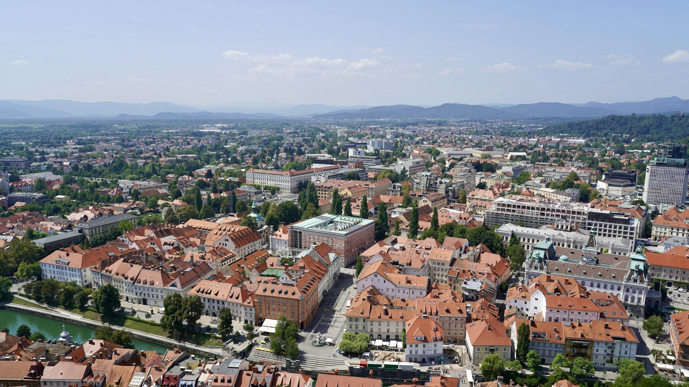

Ljubljana
Candidate country · Slovenia · from the two Slovenia decks · both routes start here
The first stop in both Slovenia plans: a small, confident capital wrapped around a green river — old town, bridges, castle hill, and food that doesn't require a plan.
The river town
The city arranges itself around the Ljubljanica river: the Triple Bridge fanning out from Prešeren Square, riverside cafés on both banks, and the Dragon Bridge wearing its winged guardians — the dragon is the city symbol, and the city is not subtle about it. Everything worth seeing is a flat walk of everything else.


Castle, market, gostilna
The castle hill is a free uphill walk with city panoramas at the top (castle interiors may cost extra — the deck is precise about that). Mornings belong to the Central Market: seasonal produce, bakery stalls, and the supplies for whatever the apartment is cooking that night. Evenings belong to a gostilna — a plain local inn — which the decks rank above the tourist waterfront restaurants, correctly.
Both plans give the capital two or three nights: culture the first day, a leisure day with a Tivoli Park picnic or a museum the next, and a relaxed riverside sunset each evening. A Ljubljana city pass bundles the museums and transport for the stay.
Eat & drink: štruklji (rolled dumplings, savoury or sweet), potica, jota, idrijski žlikrofi, Slovenian honey (UNESCO-listed, which the honey itself doesn't mention), and whatever the gostilna says is fresh. Currency is the euro.Field note · Balkans 2027
The two routes on the table
This is the hub of both Slovenia decks, and the reason the country is easy without a car: from here, Bled is about 40 minutes by bus (every 30–40 minutes), Bohinj 1h 30m, Postojna 50 minutes, and Piran 2h 30m — the longest leg by far. Both plans are public-transport-only, and Slovenia makes that easy.
- The 10-day plan — written for a bigger group and shared apartments: Ljubljana nights 1–3, Bled 4–6 (Bohinj by bus so the bags stay put), the Koper/Piran coast 7–9, day 10 home. Budgeted to R28,500 against a R30,000 cap — deck planning figures, not quotes.
- The 7-day plan — late May to early June, one-night hops: Ljubljana (2) → Bled (1) → Bohinj (1) → Postojna/Predjama (1) → Piran (1) → Kranjska Gora (1), estimated at R29,726. Also a working number.
One practical asymmetry sits with this country: Slovenia is in Schengen, so it needs a visa where its neighbours mostly don't, and the flight routings differ too — both laid out on the Flights & visas page. Nothing is decided and no combination is ruled out; the itinerary page keeps the combinations on the table current.